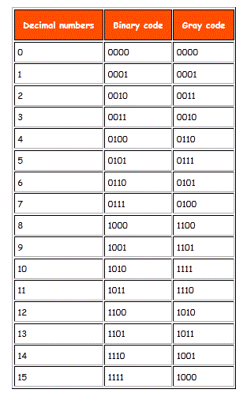
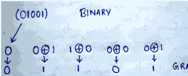
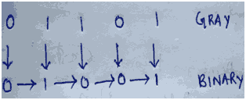

Code is a symbolic representation of discrete information. Codes are of different types. Gray Code is one of the most important codes. It is a non-weighted code which belongs to a class of codes called minimum change codes. In this codes while traversing from one step to another step only one bit in the code group changes. In case of Gray Code two adjacent code numbers differs from each other by only one bit. The idea of it can be cleared from the table given below.
As this code it is not applicable in any types of arithmetical operations but it has some applications in analog to digital converters and in some input/output devices. Now let us concentrate on the table of Gray Code given below where we can find the difference of binary code from gray code while traversing through the table for their respective decimal numbers.

From this table we can obtain the equivalent gray code of the decimal numbers. There are several steps which will make you understand how the codes are formed.
(1) In case of gray code one bit will change from its previous in each steps. One thing must be kept in mind that the change of bit always occurs from the right side i.e from L.S.B towards the M.S.B. At first the first three bits are constant I,e 000 and the fourth bit changes from 0 to 1. We know that for binary digit possible combination is 0 and 1, so keeping first three bit constant the possible combination of 4th bit is over for decimal 0 and 1 respectively.
(2)Now move to the next bit from L.S.B i.e 3rd bit, that changes from 0 to 1 which is the decimal equivalent for 2. Now one more combination is left for the fourth bit keeping the first three constant i.e 001. We can change 4th bit from 1 to 0. Thus the gray code for decimal number 3 is 0010.
(3)Traverse to the next code. Here we can do only one thing i.e we can change the second bit as all possible combinations are over. Question may strike in your mind that why can’t we change the third bit again which will also be a one bit change from its previous. But changing third bit would give the equivalent gray code 0000 which has occurred earlier. So you must remember that a number occurring previously must not be repeated. So the equivalent code for 4 will be 0110. Here only the second bit has changed from the previous code. Now again we will keep first and second bit constant and find the possible combinations of the third and the fourth bit by only changing 1 bit in each steps.
Now for 5 only the fourth bit has changed. Again for 6 only the third bit is changed keeping others constant. Lastly at 7 again the fourth bit has changed from 1 to 0 where all other bits are constant. In 8 you can see that the equivalent gray code is 1100. Here the 1st bit changes from 0 to n1 as all the combination of the 2nd,3rd and 4th bits are completed keeping the 1st constant at 0. Now in same way the 1st bit is kept constant and all the possible combination changing single bit in each step from right to left is done.
Binary to gray code conversion
Binary to gray code conversion is a very simple process. There are several steps to do this types of conversions. Steps given below elaborate on the idea on this type of conversion.
(1) The M.S.B. of the gray code will be exactly equal to the first bit of the given binary number.
(2) Now the second bit of the code will be exclusive-or of the first and second bit of the given binary number, i.e if both the bits are same the result will be 0 and if they are different the result will be 1.
(3)The third bit of gray code will be equal to the exclusive-or of the second and third bit of the given binary number. Thus the Binary to gray code conversion goes on. One example given below can make your idea clear on this type of conversion.
|  |
Thus the equivalent gray code is 01101.
Now concentrate on the example where the M.S.B. of the binary is 0 so for it will be 0 for the most significant gray bit. Next, the XOR of the first and the second bit is done. The bits are different so the resultant gray bit will be 1. Again move to the next step, XOR of second and third bit is again 1 as they are different. Next, XOR of third and fourth bit is 0 as both the bits are same. Lastly the XOR of fourth and fifth bit is 1 as they are different. That is how the result of binary to gray code conversion of 01001 is done whose equivalent gray code is 01101.
Gray code to binary conversion
Gray code to binary conversion is again very simple and easy process. Following steps can make your idea clear on this type of conversions.
(1) The M.S.B of the binary number will be equal to the M.S.B of the given gray code.
(2) Now if the second gray bit is 0 the second binary bit will be same as the previous or the first bit. If the gray bit is 1 the second binary bit will alter. If it was 1 it will be 0 and if it was 0 it will be 1.
(3) This step is continued for all the bits to do Gray code to binary conversion.
One example given below will make your idea clear.
|  |
The M.S.B of the binary will be 0 as the M.S.B of gray is 0. Now move to the next gray bit. As it is 1 the previous binary bit will alter i.e it will be 1, thus the second binary bit will be 1. Next look at the third bit of the gray code. It is again 1 thus the previous bit i.e the second binary bit will again alter and the third bit of the binary number will be 0. Now, 4th bit of the given gray is 0 so the previous binary bit will be unchanged, i.e 4th binary bit will be 0. Now again the 5th grey bit is 1 thus the previous binary bit will alter, it will be 1 from 0. Therefore the equivalent Binary number in case of gray code to binary conversion will be (01001)
 by
by